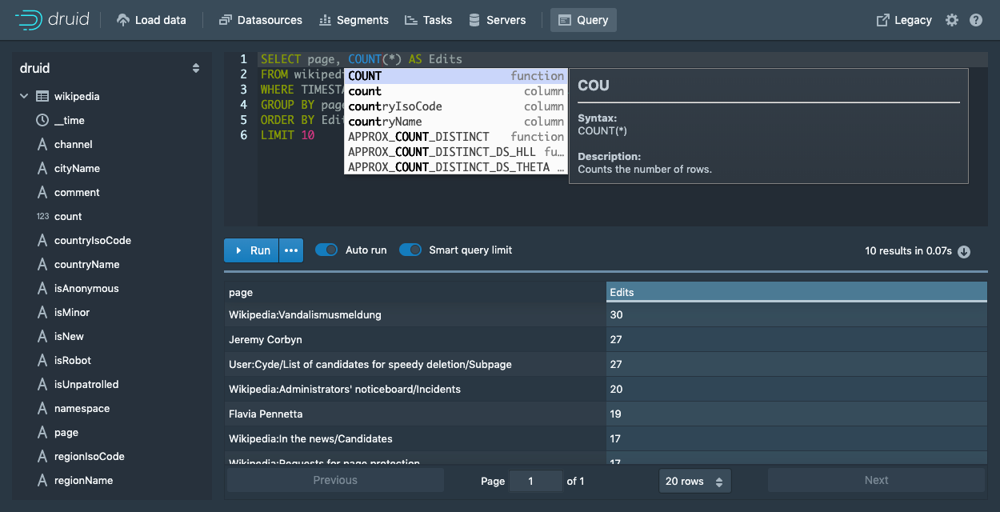
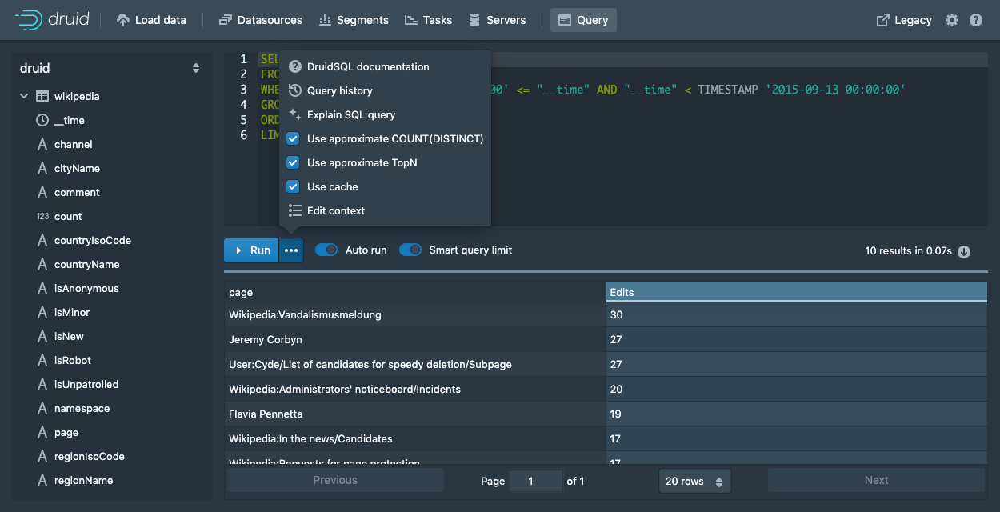
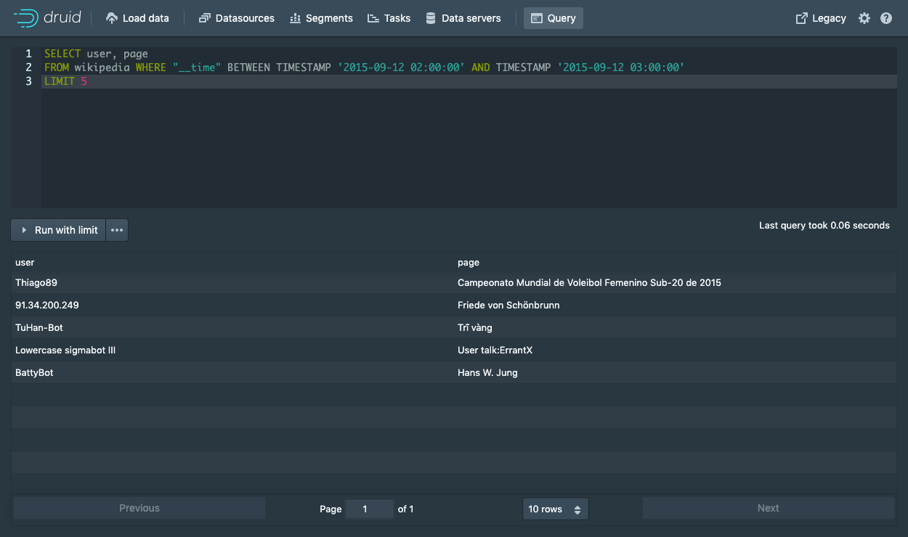
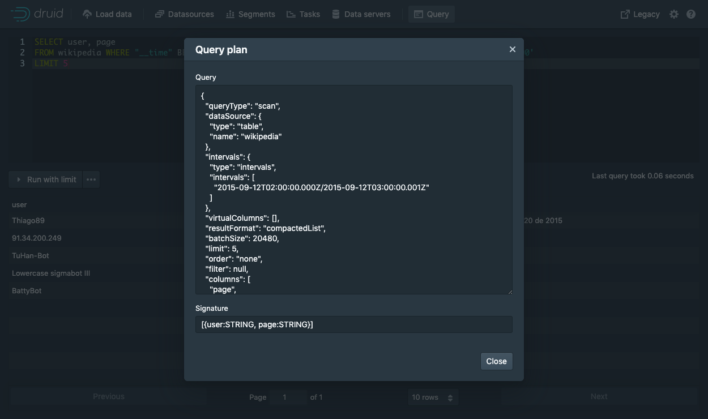

Tutorial: Querying data
This tutorial will demonstrate how to query data in Apache Druid (incubating), with examples for Druid SQL and Druid's native query format.
The tutorial assumes that you've already completed one of the 4 ingestion tutorials, as we will be querying the sample Wikipedia edits data.
- Tutorial: Loading a file
- Tutorial: Loading stream data from Kafka
- Tutorial: Loading a file using Hadoop
Druid queries are sent over HTTP. The Druid console includes a view to issue queries to Druid and nicely format the results.
Druid SQL queries
Druid supports a dialect of SQL for querying.
This query retrieves the 10 Wikipedia pages with the most page edits on 2015-09-12.
SELECT page, COUNT(*) AS Edits
FROM wikipedia
WHERE TIMESTAMP '2015-09-12 00:00:00' <= "__time" AND "__time" < TIMESTAMP '2015-09-13 00:00:00'
GROUP BY page
ORDER BY Edits DESC
LIMIT 10
Let's look at the different ways to issue this query.
Query SQL via the console
You can issue the above query from the console.

The console query view provides autocomplete functionality with inline documentation.

You can also configure extra context flags to be sent with the query from the ... options menu.
Note that the console will (by default) wrap your SQL queries in a limit where appropriate so that queries such as SELECT * FROM wikipedia can complete.
You can turn off this behavior from the Smart query limit toggle.
The query view provides contextual actions that can write and modify the query for you.
Query SQL via dsql
For convenience, the Druid package includes a SQL command-line client, located at bin/dsql from the Druid package root.
Let's now run bin/dsql; you should see the following prompt:
Welcome to dsql, the command-line client for Druid SQL.
Type "\h" for help.
dsql>
To submit the query, paste it to the dsql prompt and press enter:
dsql> SELECT page, COUNT(*) AS Edits FROM wikipedia WHERE "__time" BETWEEN TIMESTAMP '2015-09-12 00:00:00' AND TIMESTAMP '2015-09-13 00:00:00' GROUP BY page ORDER BY Edits DESC LIMIT 10;
┌──────────────────────────────────────────────────────────┬───────┐
│ page │ Edits │
├──────────────────────────────────────────────────────────┼───────┤
│ Wikipedia:Vandalismusmeldung │ 33 │
│ User:Cyde/List of candidates for speedy deletion/Subpage │ 28 │
│ Jeremy Corbyn │ 27 │
│ Wikipedia:Administrators' noticeboard/Incidents │ 21 │
│ Flavia Pennetta │ 20 │
│ Total Drama Presents: The Ridonculous Race │ 18 │
│ User talk:Dudeperson176123 │ 18 │
│ Wikipédia:Le Bistro/12 septembre 2015 │ 18 │
│ Wikipedia:In the news/Candidates │ 17 │
│ Wikipedia:Requests for page protection │ 17 │
└──────────────────────────────────────────────────────────┴───────┘
Retrieved 10 rows in 0.06s.
Query SQL over HTTP
The SQL queries are submitted as JSON over HTTP.
The tutorial package includes an example file that contains the SQL query shown above at quickstart/tutorial/wikipedia-top-pages-sql.json. Let's submit that query to the Druid Broker:
curl -X 'POST' -H 'Content-Type:application/json' -d @quickstart/tutorial/wikipedia-top-pages-sql.json http://localhost:8888/druid/v2/sql
The following results should be returned:
[
{
"page": "Wikipedia:Vandalismusmeldung",
"Edits": 33
},
{
"page": "User:Cyde/List of candidates for speedy deletion/Subpage",
"Edits": 28
},
{
"page": "Jeremy Corbyn",
"Edits": 27
},
{
"page": "Wikipedia:Administrators' noticeboard/Incidents",
"Edits": 21
},
{
"page": "Flavia Pennetta",
"Edits": 20
},
{
"page": "Total Drama Presents: The Ridonculous Race",
"Edits": 18
},
{
"page": "User talk:Dudeperson176123",
"Edits": 18
},
{
"page": "Wikipédia:Le Bistro/12 septembre 2015",
"Edits": 18
},
{
"page": "Wikipedia:In the news/Candidates",
"Edits": 17
},
{
"page": "Wikipedia:Requests for page protection",
"Edits": 17
}
]
More Druid SQL examples
Here is a collection of queries to try out:
Query over time
SELECT FLOOR(__time to HOUR) AS HourTime, SUM(deleted) AS LinesDeleted
FROM wikipedia WHERE "__time" BETWEEN TIMESTAMP '2015-09-12 00:00:00' AND TIMESTAMP '2015-09-13 00:00:00'
GROUP BY 1
General group by
SELECT channel, page, SUM(added)
FROM wikipedia WHERE "__time" BETWEEN TIMESTAMP '2015-09-12 00:00:00' AND TIMESTAMP '2015-09-13 00:00:00'
GROUP BY channel, page
ORDER BY SUM(added) DESC
Select raw data
SELECT user, page
FROM wikipedia WHERE "__time" BETWEEN TIMESTAMP '2015-09-12 02:00:00' AND TIMESTAMP '2015-09-12 03:00:00'
LIMIT 5

Explain query plan
Druid SQL has the ability to explain the query plan for a given query.
In the console this functionality is accessible from the ... button.

If you are querying in other ways you can get the plan by prepending EXPLAIN PLAN FOR to a Druid SQL query.
Using a query from an example above:
EXPLAIN PLAN FOR SELECT page, COUNT(*) AS Edits FROM wikipedia WHERE "__time" BETWEEN TIMESTAMP '2015-09-12 00:00:00' AND TIMESTAMP '2015-09-13 00:00:00' GROUP BY page ORDER BY Edits DESC LIMIT 10;
dsql> EXPLAIN PLAN FOR SELECT page, COUNT(*) AS Edits FROM wikipedia WHERE "__time" BETWEEN TIMESTAMP '2015-09-12 00:00:00' AND TIMESTAMP '2015-09-13 00:00:00' GROUP BY page ORDER BY Edits DESC LIMIT 10;
┌─────────────────────────────────────────────────────────────────────────────────────────────────────────────────────────────────────────────────────────────────────────────────────────────────────────────────────────────────────────────────────────────────────────────────────────────────────────────────────────────────────────────────────────────────────────────────────────────────────────────────────────────────────────────────────────────────────────────────────────────────────────────────────────────────────────────────────────┐
│ PLAN │
├─────────────────────────────────────────────────────────────────────────────────────────────────────────────────────────────────────────────────────────────────────────────────────────────────────────────────────────────────────────────────────────────────────────────────────────────────────────────────────────────────────────────────────────────────────────────────────────────────────────────────────────────────────────────────────────────────────────────────────────────────────────────────────────────────────────────────────────┤
│ DruidQueryRel(query=[{"queryType":"topN","dataSource":{"type":"table","name":"wikipedia"},"virtualColumns":[],"dimension":{"type":"default","dimension":"page","outputName":"d0","outputType":"STRING"},"metric":{"type":"numeric","metric":"a0"},"threshold":10,"intervals":{"type":"intervals","intervals":["2015-09-12T00:00:00.000Z/2015-09-13T00:00:00.001Z"]},"filter":null,"granularity":{"type":"all"},"aggregations":[{"type":"count","name":"a0"}],"postAggregations":[],"context":{},"descending":false}], signature=[{d0:STRING, a0:LONG}]) │
└─────────────────────────────────────────────────────────────────────────────────────────────────────────────────────────────────────────────────────────────────────────────────────────────────────────────────────────────────────────────────────────────────────────────────────────────────────────────────────────────────────────────────────────────────────────────────────────────────────────────────────────────────────────────────────────────────────────────────────────────────────────────────────────────────────────────────────────┘
Retrieved 1 row in 0.03s.
Native JSON queries
Druid's native query format is expressed in JSON.
Native query via the console
You can issue native Druid queries from the console's Query view.
Here is a query that retrieves the 10 Wikipedia pages with the most page edits on 2015-09-12.
{
"queryType" : "topN",
"dataSource" : "wikipedia",
"intervals" : ["2015-09-12/2015-09-13"],
"granularity" : "all",
"dimension" : "page",
"metric" : "count",
"threshold" : 10,
"aggregations" : [
{
"type" : "count",
"name" : "count"
}
]
}
Simply paste it into the console to switch the editor into JSON mode.
Native queries over HTTP
We have included a sample native TopN query under quickstart/tutorial/wikipedia-top-pages.json:
Let's submit this query to Druid:
curl -X 'POST' -H 'Content-Type:application/json' -d @quickstart/tutorial/wikipedia-top-pages.json http://localhost:8888/druid/v2?pretty
You should see the following query results:
[ {
"timestamp" : "2015-09-12T00:46:58.771Z",
"result" : [ {
"count" : 33,
"page" : "Wikipedia:Vandalismusmeldung"
}, {
"count" : 28,
"page" : "User:Cyde/List of candidates for speedy deletion/Subpage"
}, {
"count" : 27,
"page" : "Jeremy Corbyn"
}, {
"count" : 21,
"page" : "Wikipedia:Administrators' noticeboard/Incidents"
}, {
"count" : 20,
"page" : "Flavia Pennetta"
}, {
"count" : 18,
"page" : "Total Drama Presents: The Ridonculous Race"
}, {
"count" : 18,
"page" : "User talk:Dudeperson176123"
}, {
"count" : 18,
"page" : "Wikipédia:Le Bistro/12 septembre 2015"
}, {
"count" : 17,
"page" : "Wikipedia:In the news/Candidates"
}, {
"count" : 17,
"page" : "Wikipedia:Requests for page protection"
} ]
} ]
Further reading
The Queries documentation has more information on Druid's native JSON queries.
The Druid SQL documentation has more information on using Druid SQL queries.